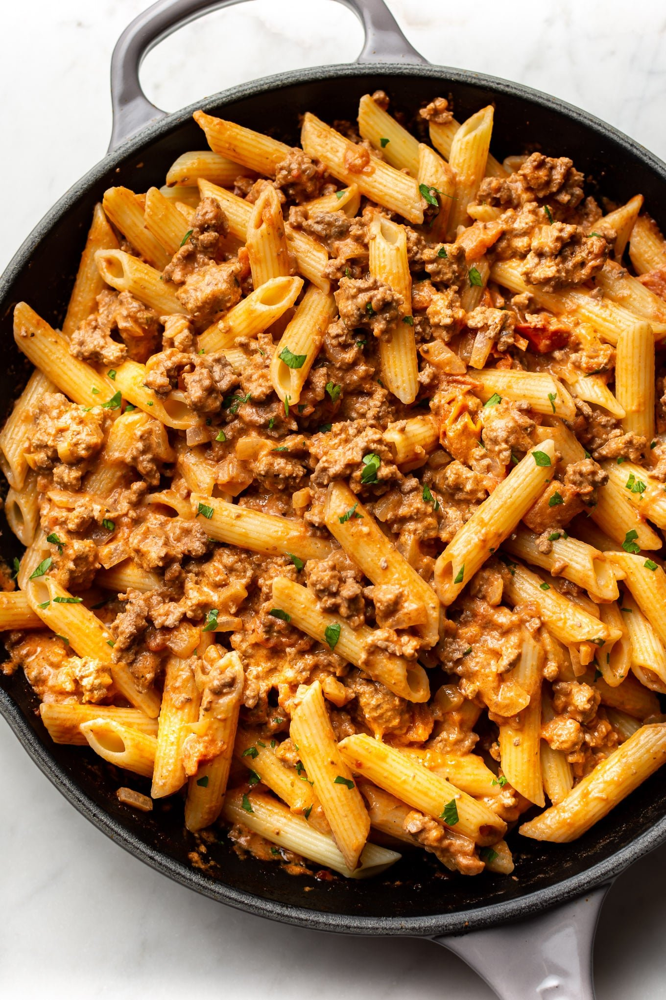

Beef Pasta
This is a very simple red sauce beef pasta recipe for you to enjoy on an evening. The quantities are considered for four portions.

Ingredients
- 1kg minced beef
- 400g pasta of your choice
- 2 medium onions
- 2 medium carrots
- 500ml tomato sauce
- Salt, pepper, chilli, other condiments
- 1 tbsp olive oil
Steps
- Add the diced onions in a big bowl with oil and fry until the onions become yellow-ish
- Add the carrots and beef and fry for a bit
- After the beef gets a brown-ish color, add water and boil until the meat is done
- Boil the pasta as instructed on the package
- After the meat is cooked, add the tomato sauce and condiments
- Combine the pasta and sauce and enjoy!